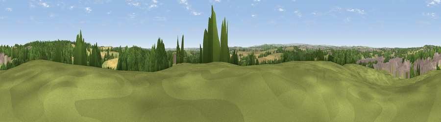

Viewpoint near Grimethorpe
#21314 in England · top 33% of its area beats it · near GrimethorpeThe view, rendered

A 360° render of this exact spot computed from the terrain model, tree cover and land cover — summer colours, afternoon light, calibrated against photographs of famous viewpoints. Real trees, hedges and buildings will differ in detail.
The panorama
Grey silhouette: terrain skyline in each direction (720 bearings, Earth curvature and refraction included). Dashed green: skyline with trees (+15 m) and buildings (+8 m) as obstacles. Blue strip: how far the ground is visible on each bearing.
Where the view opens
Wedge length = distance to the farthest visible ground on that bearing (vegetation-aware). Rings at 10, 25 and 50 km.
What fills the view
32% grassland · 31% woodland · 24% cropland · 13% built-up
Angular shares of the visible panorama (visual magnitude), not map area. Landscape diversity 0.59 (0–1 Shannon).
Key numbers
More beautiful places nearby
The staircase of upgrades: each row has a higher view potential than everything closer. Driving times are estimates from straight-line distance, calibrated against real road routing — check an actual route before setting out.
| Place | Direction | Drive | Score |
|---|---|---|---|
| Viewpoint near Little Houghton | SSE · 2 km | ~5 min | 53.9 |
| Viewpoint near Grimethorpe | NNE · 3 km | ~7 min | 63.8 |
| Hoyland Lowe | SW · 8 km | ~17 min | 68.7 |
| Viewpoint near Wharncliffe Side | SW · 15 km | ~27 min | 75.0 |
| Viewpoint near Wharncliffe Side | SW · 15 km | ~27 min | 75.2 |
| Viewpoint near Greenfield | W · 41 km | ~61 min | 76.0 |
| Viewpoint near Otley | NNW · 42 km | ~62 min | 77.5 |
| Hood Hill | N · 74 km | ~98 min | 79.6 |
53.56360, -1.37453 · source: screening · position refined by local search. Computed location — check access rights before visiting.